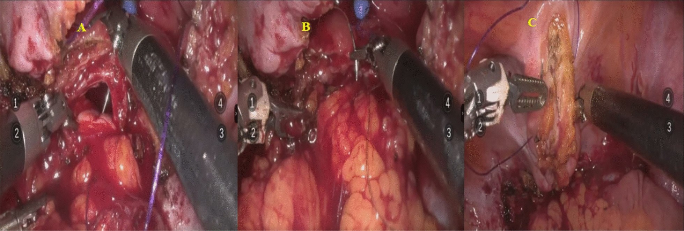

Página 5 · Parte 1 · Fístulas genitais
Primeiro a sonda, depois a régua do tamanho
Diante de um buraco entre a bexiga e a vagina, o reflexo é pensar em fechá-lo cirurgicamente. Na imensa maioria das vezes, a primeira conduta correta não envolve bisturi — envolve uma sonda e três a quatro semanas de paciência.
O reflexo errado: fístula não começa na sala de cirurgia
Diante de fístula pequena, o tratamento inicial é cateterismo vesical por três a quatro semanas. Sob cateterismo, observa-se se aconteceu o fechamento espontâneo da fístula. E o mecanismo é simples e elegante: fístulas pequenas, quando se diminui o débito que passa pelo trajeto, normalmente fecham espontaneamente — resolvendo o problema da paciente sem nada mais sofisticado em termos de conduta. A sonda desvia a urina para fora pela uretra, o trajeto para de ser lavado continuamente, e um túnel de pequeno calibre com bordas vitais tem tudo para cicatrizar por segunda intenção.
O prazo de três a quatro semanas não é arbitrário, e saber por quê muda a forma de usá-lo: é o fim da janela biológica. A correção espontânea, quando ocorre, acontece nas primeiras quatro semanas; passado esse período, a probabilidade de resolução espontânea é muito baixa. Ou seja, a sonda não é um "vamos tentando" indefinido — ela é um teste com prazo de validade, e o fim do prazo é o que autoriza mudar de estratégia. Vale conhecer também quem entra nessa tentativa, porque o critério é mais fino que "pequena": a candidata ideal tem fístula pequena (as séries trabalham com menos de 1 cm, e "simples" costuma significar menos de 0,5 cm), diagnóstico precoce, e tecido não irradiado, não maligno, sem infecção e bem vascularizado. Reconhece-se aí, ponto por ponto, o perfil da fístula não complicada — e é por isso que a classificação vinha antes.
Cauterizar o trajeto: a manobra que triplica o resultado da sonda
Na fístula pequena e não complicada, além da derivação, pode ser feito o tratamento do trajeto — o gesto que a literatura nomeia como cauterização (fulguração) do trajeto fistuloso, por eletrocautério ou laser. A lógica é destruir o revestimento epitelial do túnel: enquanto o trajeto estiver epitelizado, ele se comporta como um conduto estável e não colaba; desepitelizado, ele vira uma ferida, e ferida cicatriza. O detalhe que importa é que essa manobra não é um degrau alternativo à sonda — ela se acopla à sonda. Os números mostram por quê: a drenagem vesical isolada resolve entre 3% e 32% dos casos, enquanto a fulguração associada à drenagem contínua chega a 73% de sucesso em fístulas pequenas. É a mesma paciente, a mesma fístula, e uma diferença de resultado que se explica só pela combinação.
Não fechou — a moeda de avaliação vira o tamanho
Havendo insucesso no fechamento espontâneo, a moeda de avaliação passa a ser o tamanho da fístula. Essa frase merece ser lida devagar, porque ela descreve uma troca de critério: até aqui, o que orientava era a origem (não complicada × complexa); a partir do fracasso do conservador, o que orienta é a dimensão, medida na cistoscopia. Não é que a origem deixe de importar — ela volta como uma das três condições do corte —, mas o eixo principal da decisão muda de qualitativo para quantitativo.
Pequena e não complicada: por que se espera de três a seis meses
Na fístula pequena e não complicada, a abordagem cirúrgica pode ser feita por via vaginal ou abdominal, e mais tardiamente — três a seis meses depois. Esperar meses para operar uma paciente que está molhada parece contraintuitivo, e é aqui que a página paga o mecanismo isquêmico. A cadeia inteira: o tempo diminui o edema → facilita a identificação da fístula → a região já estará mais vascularizada → e então se faz a correção sítio-específica daquele ponto de comunicação anormal. Traduzindo em termos de campo cirúrgico: operar cedo significa dissecar tecido inchado, com limites borrados e mal perfundido — sutura em tecido assim solta, e a fístula recidiva maior do que era. Operar depois significa encontrar bordas definidas, plano de clivagem identificável e tecido que segura ponto. Opera-se tecido revascularizado, não tecido isquêmico — é a mesma lógica que definiu a palavra "complexa", agora convertida em cronograma.
Vale saber de onde vem esse número, porque ele tem uma nuance moderna de alto valor: a espera clássica de 3 a 6 meses foi construída na era da fístula obstétrica — grande, muito inflamada, frequentemente infectada. No cenário atual da fístula iatrogênica pequena, detectada cedo e não irradiada, a tendência é reparar mais cedo, com séries descrevendo tratamento entre 2 e 12 semanas e taxas de sucesso de 90 a 100%. O número da prova continua sendo 3-6 meses, e é ele que se responde; a atualização mostra que o critério real não é o calendário, é a qualidade do tecido. E há um grupo em que a espera longa segue inegociável: a fístula actínica, além de tentativa prévia fracassada e de processo inflamatório/infeccioso pélvico em atividade.
Maior que dois centímetros, complicada ou alta: via abdominal
Fístula mais volumosa — maior do que dois centímetros —, ou complicada, ou alta: aí é preciso abordagem cirúrgica por via ABDOMINAL. As três condições são alternativas, não cumulativas — cada uma delas, sozinha, já manda para a via abdominal. E cada uma tem uma tradução concreta: maior que 2 cm é, formalmente, um dos critérios que define a fístula como complexa (ao lado de recidiva após tratamento prévio, fibrose residual e associação com radioterapia); complicada traz de volta o tecido isquêmico do parto, da irradiação e do câncer; e alta significa supratrigonal — o orifício situado acima do trígono, perto da cúpula, que é anatomicamente inalcançável por via vaginal com margem adequada. Por simetria: as fístulas infratrigonais, cervicais ou de uretra proximal são as classicamente abordadas por via transvaginal.
Nessa situação a abordagem é mais imediata — no sentido preciso de que não se perde tempo com o conservador: essa fístula não fecha com sonda, então segue-se direto para o planejamento cirúrgico por via abdominal. Atenção para não ler isso como "operar agora mesmo": em tecido irradiado, a preparação continua exigindo tempo e, frequentemente, interposição de tecido bem vascularizado entre a bexiga e a vagina. O que "imediata" nega é a tentativa conservadora, não o preparo.
E o fecho de estratégia terapêutica: na imensa maioria das vezes, o que se cobra é fístula vesicovaginal pequena, de baixo débito, com tratamento inicial conservador por cateterismo de três a quatro semanas e observação do fechamento espontâneo. A abordagem cirúrgica fica condicionada à apresentação daqueles tipos de fístula que a exigem — não é a resposta padrão. E, entre as fístulas genitais, a vesicovaginal é disparado a que mais aparece em prova — ainda que excepcionalmente, porque fístula não é tema comumente abordado no acesso direto. Saber quanto vale cada coisa é parte de estudar bem.
Decisão com um corte
as três condições finais são alternativas
Campo laparoscópico de reparo de fístula vesicovaginal: fechamento da parede vaginal (A), interposição de retalho (B) e fechamento vesical (C).
À esquerda, o painel A mostra a linha de reparo da parede vaginal. No centro, o painel B apresenta tecido vascularizado interposto entre os planos reparados. À direita, o painel C mostra o fechamento da bexiga.
A imagem materializa por que o reparo não é simplesmente “dar um ponto no buraco”: bexiga e vagina são tratadas em planos separados, com fechamento sem tensão e interposição seletiva quando a qualidade tecidual ou a complexidade da fístula a justificam. Ela ancora o gesto cirúrgico realizado depois que edema, inflamação e perfusão permitem uma sutura confiável.
Não confundir com reparo de fístula retovaginal, prolapso ou incontinência: a legenda original identifica expressamente parede vaginal, retalho interposto e fechamento vesical durante reparo de FVV. O campo é transabdominal; não o rotular como via vaginal.
Wang Z et al. Vesicovaginal fistula repair: comparative analysis of perioperative outcomes and predictors of success in open, laparoscopic, and robotic approaches. European Journal of Medical Research. 2026;31:341, Figura 2. CC BY 4.0. DOI 10.1186/s40001-026-03937-5. Alterações: nenhuma; acesso em 28/07/2026.
Quiz — fixação
Mulher de 45 anos, fístula vesicovaginal de 0,6 cm diagnosticada 10 dias após histerectomia por miomatose, sem irradiação prévia e sem infecção. A conduta inicial mais adequada é:
- Gabarito B. Fístula pequena, não complicada, de diagnóstico precoce, em tecido não irradiado e sem infecção é exatamente a candidata ao conservador: a sonda diminui o débito que atravessa o trajeto e permite a cicatrização espontânea, dentro da janela biológica de até 4 semanas.
- (A) pula o degrau que resolve a maioria dos casos e opera tecido agudamente edemaciado — pior campo e maior chance de recidiva.
- (C) confunde duas coisas distintas: os 3-6 meses são o intervalo até a cirurgia, caso o conservador falhe, e não um período de observação passiva; deixar a paciente molhada seis meses sem sequer tentar a sonda desperdiça a única janela em que o fechamento espontâneo acontece.
- (D) é conduta de fim de linha, desproporcional a uma fístula de 0,6 cm.
- Por que cair na (C): o número "3-6 meses" gruda como se fosse o tempo de espera padrão da fístula, e o candidato o aplica antes de ter havido qualquer tentativa — invertendo a ordem entre testar a sonda e preparar o tecido.
Assinale a situação que, isoladamente, já indica abordagem cirúrgica por via abdominal:
- Gabarito B. As três condições que mandam para a via abdominal são > 2 cm, complicada ou alta — e "alta" significa supratrigonal, posição que a via vaginal não alcança com margem adequada. Basta uma delas.
- (A) descreve fístula pequena ainda dentro da janela de 4 semanas, com sinal de resposta: a conduta é completar o período, não operar.
- (C) é queixa legítima, mas desconforto não é critério anatômico nem de complexidade; a resposta é manejo da sonda.
- (D) descreve o timing típico de apresentação da fístula pós-operatória (pico de 7-14 dias) — é o esperado, não um critério de via.
- Por que cair na (D): confunde-se quando a fístula apareceu com como ela deve ser abordada; o momento do diagnóstico até favorece o conservador (diagnóstico precoce é critério de seleção), enquanto quem decide a via é tamanho, complexidade e altura.
Fecha aqui a metade da comunicação anormal. A segunda metade trata de uma bexiga em que não há buraco nenhum — e que, mesmo assim, dói.